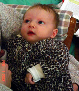

New Mexico Network for
WOMEN IN SCIENCE & ENGINEERING
PO Box 1360, Los Alamos, NM 87544
http://www.nmnwse.org/
THE NETWORK NEWS
February 2002
|
|
New Mexico Network for
|
|
NMNWSE Board of Directors
President
Past President
Vice President/President-Elect
Secretary
Treasurer
Annual Meeting
Archives
Elections
EYH Coordinator
Fund Raising
Membership
Newsletter
Publicity
Policies and Procedures
Science Fair
Dana Roberson
Central Chapter
Eastern Chapter
Northern Chapter
Southern Chapter
|
 It has been about six months since the newsletter was published. I am happy to say that there is a good reason for this: the newsletter editor, Sara Gottlieb, gave birth to Sadie Rose, a beautiful baby girl, rather than a newsletter (December 24, 2001 -- Weight: 6 pounds, 10.7 ounces, Length: 19 and 3/4 inches, photo right).
This issue marks a change in newsletter content. The newsletter has always been the way to communicate what is going on with the organization by providing the minutes of the Board Meetings. Now that we have a web site magnificently managed by our web master, Carol La Delfe, the Board meeting minutes will be available on the web. This newsletter will contain highlights of activities, events, awards, and news. My fellow newsletter editor, dede Collins, and I would be grateful for any news you might like to pass on. Send items to: Kelly Bitner (bitner@neptuneandco.com) or dede Collins (dede@nets.com). We would also like to acknowledge the help of Kim Linder, who will turn these newsletters into .pdf formats to make them easier for everyone to read.
If you would like to be kept informed about activities in the Network on a more frequent basis than the Newsletter provides, sign up for the NMNWSE listserv by sending a message to nmnwse-l@unm.edu with "Subscribe Firstname Lastname" in the text of the message.
Look for this in the next issue of the newsletter!
The Board has noted a decline in the Network:
Although the membership retains the enthusiasm to produce excellent EYH conferences, there appears to be no enthusiasm left for the "networking" part of our organization. Based on these observations, the Board is discussing developing a charter for the organization that focuses on encouraging the entry and career development of women in science and engineering professional and to encourage young women who are unaware of, or afraid of, science and engineering education or careers. This charter would focus our efforts on EYH, science fairs, mentoring. This would take us away from having an organization that brings women from all over the state together to actively network. What do you think? Please send any thoughts or comments you might have to any of the Board members listed on the first page.
NMNWSE Nominations for Awards
The Network has nominated two members for awards:
The first is Adrienne Dare, who has been nominated for the YWCA Women on the Move Award. The YWCA of the Middle Rio Grande established this award in 1985 to recognize women who have made significant contributions to their community, businesses and organizations. This year, ten women will be selected as Women on the Move Award recipients. All nominees will be honored at two upcoming events, the WOTM 2002 Honoree Reception on February 27, 2002 and the WOTM 2002 Awards Dinner on March 7, 2002. Anyone who would like to support Adrienne and the YWCA, you can attend the awards dinner by purchasing a ticket for $75 ($50 is tax deductible). Adrienne, who recently retired from the math Department at Western New Mexico University, has spearheaded the EYH activities of the Network on the State level. She has also organized the Silver City EYH nearly single-handed for many years. Adrienne's nomination will be available on the Network web site, so visit and get to know Adrienne a little better.
The second is Kelly Bitner, who is being nominated for the Governor's Awards for Outstanding New Mexico Women. This award was started in 1986 by the NM Commission on the Status of Women in conjunction with the Governor's office. Nominees are women who have made extra efforts to improve the status of women in out state. Kelly Bitner is being nominated for her work on the cost of complying with a new arsenic drinking water standard, which estimated that the cost of water would have an average increase of $90/month in small communities (<1,000 people). This regulation will impact the rural communities the hardest. In addition, the nomination is based on Kelly's work on the Albuquerque EYH steering committee for the past 5 years and mentoring science fair students.
The Board would like to nominate Network members for these awards and others every year. If you would like to be a nominee or know someone who you think should be a nominee, contact any board member listed on the front page of this newsletter.
Check out the nmnwse.org web site, in the "Network News" link, there is a new feature -- the Network Family News. In the current version, you can see photos and get birth statistics on Kim Linder's new daughter, Hannah; Sara Gottlieb's new daughter, Sadie Rose; and Catherine Hensley's twins (Carol La Delfe's grandchildren), Richard and Patricia. Send any family news (with photos if you wish) to Carol La Delfe at cladelfe@lanl.gov.
Honeywell Donation
Honeywell FM&T has donated $1,000 for the EYHs in Albuquerque and Los Alamos. We are truly grateful for the donation and to those that make it happen. Thanks to Honeywell and Kim Linder!
Four Board Meetings were held in 2001. The minutes for each meeting are available on our web site: www.nmnwse.org.
We welcome Yolanda King back to the Land of Enchantment after a mutli-year stint in the nation's capital. Although Yolanda keeps very busy on the campaign trail with her husband, gubernatorial candidate Gary King, she has agreed to serve as Network Treasurer.
The 2001 Annual Meeting was held at the Sheraton Uptown Hotel in Albuquerque. Help with organizing the Annual Meeting came from Kim Linder, Margo Clark, and Dana Roberson. There were 27 pre-registered participants, (two no-shows) and 2 who registered at the meeting. The meeting began at 3:00 on Friday, October 19 with four presentations. After the presentations, there was a networking session in the hotel lounge. Saturday morning began with the annual meeting, and then technical presentations until 4:00. Lunch was a buffet at the hotel with a lunch speaker, Dr. Mercedes Agogino. At 4:00 the group was invited to reconvene at the Aquarium/Botanical Gardens for a bike ride/walk prior to dinner. Dinner was a buffet, held in front of the shark tank in the Albuquerque Aquarium. The dinner speaker was Dr. Stephanie Forrest (UNM, Computer Science). Sunday the Board met at Kelly Bitner's house from 8:00 to 10:00.
The turnout for the meeting was small. I have some Suggestions for improvement:
If you attended the Annual Meeting and Technical Symposium and have suggestions for improvement or didn't attend and would like to offer what would get you to attend in the future, please send them to Kelly (bitner@neptuneandco.com).
Congratulations to Beulah Woodfin for reaching the highly desired state of RETIREMENT from UNM. It is our good fortune that Beulah has some extra time and is willing to spend it doing fund raising for us.
Our membership numbers have dropped to 79 this year. We need MORE members! Please talk to your friends and colleagues and get them to join. The membership form is available on the website (www. nmnwse.org). Carol La Delfe is the membership chair and can answer any questions about membership.
Kim Linder is the publicity chair and has done an excellent job finding opportunities to advertise, of the best kind -- FREE. The brown wrappers in the Albuquerque Journal have drawn an interested response over the past 3 years. If you have any ideas about advertising - your company newsletter, school newspaper - please contact Kim Linder (klinder@kcp.com)
Science Fair awards will be given out by the Network on April 13 in Socorro. The awards are: ten first place awards of $50 each and individual certificates, five to Junior young women exhibitors, five to Senior young women exhibitors in categories to be selected by the judges, with tote bags going to second place winners. Career books are also given out. Judges are needed - about 10 judges, 2 for each category. If you can come and be one of our Special Award judges, please stay and participate in the Board Meeting that will take place from 2:00 - 4:00 at NM Tech. If you would like to volunteer to judge or have any questions, contact Mercedes Agogino (Mercedes.agogino@enmu.edu) or Dana Roberson (dsroberson@lanl.gov).
Three EYH conferences are in the works:
|
City |
Date |
Location |
|
Albuquerque
|
Saturday, March 9, 2002 |
University of New Mexico |
|
Los Alamos
|
March 13, 2002 |
Los Alamos National Laboratory |
|
Silver City
|
March 2, 2002 |
Western New Mexico University |
There is no organized southern chapter at this time. If there is anyone interested in organizing the chapter, the Board would like to provide any help or encouragement necessary.
Kathy Prestridge is chairing the Northern Section. Kathy has been busy writing a book and rumors are she liked it so much, she is writing another!
Some Board Members from the Central Chapter area - Jeanne Banks, Barbara Torres, and Kelly Bitner are organizing a meeting to be held in mid-March. It is hoped that with Jeanne and Barbara - the "old timers" - back, other members who have been inactive will come back. Jeanne says that there are a number of young women working for her at TRW that have expressed an interest in joining an organization like ours. We hope to get regular meetings and activities going again.